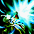

2011～ 光奏師 スキル一覧
| シューティングライト | ||||||||||||||
|---|---|---|---|---|---|---|---|---|---|---|---|---|---|---|
| スキル難易度 | 1 | |||||||||||||
| 必要スキル | なし |
|||||||||||||
| スキル説明 |
単体の敵を対象に殺傷力がある光属性のビームを放つ。 |
|||||||||||||
| レベル | 1 | 2 | 3 | 4 | 5 | 6 | 7 | 8 | 9 | 10 | 20 | 30 | 40 | 50 |
| 消費CP | 0 | 0 | 0 | 0 | 0 | 0 | 0 | 0 | 0 | 0 | 0 | 0 | 0 | 0 |
| 獲得CP | 1 | 1 | 2 | 3 | 3 | 3 | 4 | 4 | 5 | 5 | 9 | 13 | 17 | 21 |
| 光ダメ最小 | 5.99 | 5.99 | 5.99 | 5.99 | 5.99 | 5.99 | 5.99 | 5.99 | 5.99 | 5.99 | 5.99 | 5.99 | 5.99 | 5.99 |
| 光ダメ最大 | 7.99 | 9.99 | 11.99 | 13.99 | 15.99 | 17.99 | 19.99 | 21.99 | 23.99 | 25.99 | 45.99 | 65.99 | 85.99 | 105.99 |
| 命中回避低下持続時間 | 2.5 | 3 | 3.5 | 4 | 4.5 | 5 | 5.5 | 6 | 6.5 | 7 | 12 | 17 | 22 | 27 |
| 射程距離 | 350 | 350 | 350 | 350 | 350 | 350 | 350 | 350 | 350 | 350 | 350 | 350 | 350 | 350 |
| リフレクトライト | ||||||||||||||
|---|---|---|---|---|---|---|---|---|---|---|---|---|---|---|
| スキル難易度 | 3 | |||||||||||||
| 必要スキル | シューティングライト[11] | |||||||||||||
| スキル説明 | 何かに当たると反射するビームを放つ。 | |||||||||||||
| レベル | 1 | 2 | 3 | 4 | 5 | 6 | 7 | 8 | 9 | 10 | 20 | 30 | 40 | 50 |
| 消費CP | 15 | 18 | 21 | 24 | 27 | 30 | 33 | 36 | 39 | 42 | 72 | 102 | 132 | 162 |
| 獲得CP | 7 | 9 | 11 | 13 | 15 | 17 | 19 | 21 | 23 | 25 | 45 | 65 | 85 | 105 |
| 光ダメ最小 | 4.99 | 4.99 | 4.99 | 4.99 | 4.99 | 4.99 | 4.99 | 4.99 | 4.99 | 4.99 | 4.99 | 4.99 | 4.99 | 4.99 |
| 光ダメ最大 | 9.39 | 13.79 | 18.19 | 22.59 | 26.99 | 31.39 | 35.79 | 40.19 | 44.59 | 48.99 | 92.99 | 136.99 | 180.99 | 224.99 |
| バウンド回数 | 2 | 2 | 2 | 3 | 3 | 3 | 3 | 3 | 3 | 4 | 5 | 7 | 8 | 10 |
| 命中回避低下持続時間 | 1.3 | 1.6 | 1.9 | 2.2 | 2.5 | 2.8 | 3.1 | 3.4 | 3.7 | 4 | 7 | 10 | 13 | 16 |
| 射程距離 | 250 | |||||||||||||
|  | スプレッドビーム | |||||||||||||
|---|---|---|---|---|---|---|---|---|---|---|---|---|---|---|
| スキル難易度 | 4 | |||||||||||||
| 必要スキル |
シューティングライト[15]
リフレクトライト[8]
速読 [8] |
|||||||||||||
| スキル説明 | 前方に拡散して触れたすべての敵にダメージを与えるビームを放つ | |||||||||||||
| レベル | 1 | 2 | 3 | 4 | 5 | 6 | 7 | 8 | 9 | 10 | 20 | 30 | 40 | 50 |
| 消費CP | 18 | 22 | 25 | 29 | 32 | 36 | 39 | 43 | 46 | 50 | 85 | 120 | 155 | 190 |
| 獲得CP | 5 | 7 | 9 | 11 | 13 | 15 | 17 | 19 | 21 | 23 | 43 | 63 | 83 | 103 |
| 光ダメ最小 | 14.99 | 14.99 | 14.99 | 14.99 | 14.99 | 14.99 | 14.99 | 14.99 | 14.99 | 14.99 | 14.99 | 14.99 | 14.99 | 14.99 |
| 光ダメ最大 | 20.59 | 26.19 | 31.79 | 37・39 | 42.99 | 48.59 | 54.19 | 59.79 | 65.39 | 70.99 | 126.99 | 182.99 | 238.99 | 294.99 |
| 命中回避低下持続時間 | 1.3 | 1.6 | 1.9 | 2.2 | 2.5 | 2.8 | 3.1 | 3.4 | 3.7 | 4 | 7 | 10 | 13 | 16 |
| 射程距離 | 550 | |||||||||||||
| クリムゾン･アイ | ||||||||||||||
|---|---|---|---|---|---|---|---|---|---|---|---|---|---|---|
| スキル難易度 | 5 | |||||||||||||
| 必要スキル |
メルティングアイズ[13]
スプレッドビーム[12]
光のカーテン[7]
|
|||||||||||||
| スキル説明 | RED STONEの影響で変異してしまった右目の力を解放させ、周辺にいるすべての敵に強力な光属性の魔法攻撃を行う | |||||||||||||
| レベル | 1 | 2 | 3 | 4 | 5 | 6 | 7 | 8 | 9 | 10 | 20 | 30 | 40 | 50 |
| 消費CP | 50 | 54 | 59 | 63 | 72 | 76 | 81 | 85 | 90 | 134 | 178 | 222 | 266 | 310 |
| 獲得CP | 5 | 6 | 6 | 7 | 7 | 8 | 8 | 9 | 9 | 10 | 15 | 20 | 25 | 30 |
| 光ダメ最小 | 54.99 | 54.99 | 54.99 | 54.99 | 54.99 | 54.99 | 54.99 | 54.99 | 54.99 | 54.99 | 54.99 | 54.99 | 54.99 | 54.99 |
| 光ダメ最大 | 63.99 | 72.99 | 81.99 | 90.99 | 99.99 | 108.99 | 117.99 | 126.99 | 135.99 | 144.99 | 234.99 | 324.99 | 414.99 | 504.99 |
| 打撃回数 | 5 | 5 | 5 | 5 | 6 | 6 | 6 | 6 | 6 | 6 | 7 | 8 | 9 | 10 |
| 打撃範囲 | 2.51 | 2.52 | 2.53 | 2.54 | 2.55 | 2.56 | 2.57 | 2.58 | 2.59 | 2.6 | 2.7 | 2.8 | 2.9 | 3 |
| オプティカルホール | ||||||||||||||
|---|---|---|---|---|---|---|---|---|---|---|---|---|---|---|
| スキル難易度 | 5 | |||||||||||||
| 必要スキル |
クリムゾン・アイ[6]
タイムコントロール[10]
デストラクション[5]
|
|||||||||||||
| スキル説明 |
指定した場所に光エネルギーを集中させ、爆発を引き起こす巨大なホールを設置する。 オプティカルホールを設置すると強烈な光を発してホールが爆発し、周辺のすべての敵に大ダメージを与える。 |
|||||||||||||
| レベル | 1 | 2 | 3 | 4 | 5 | 6 | 7 | 8 | 9 | 10 | 20 | 30 | 40 | 50 |
| 消費CP | 105 | 111 | 117 | 123 | 129 | 134 | 140 | 146 | 152 | 158 | 216 | 274 | 332 | 390 |
| 獲得CP | 0 | 0 | 0 | 0 | 0 | 0 | 0 | 0 | 0 | 0 | 0 | 0 | 0 | 0 |
| 光ダメ最小 | 64.99 | 64.99 | 64.99 | 64.99 | 64.99 | 64.99 | 64.99 | 64.99 | 64.99 | 64.99 | 64.99 | 64.99 | 64.99 | 64.99 |
| 光ダメ最大 | 77.99 | 90.99 | 103.99 | 116.99 | 129.99 | 142.99 | 155.99 | 168.99 | 181.99 | 194.99 | 324.99 | 454.99 | 584.99 | 714.99 |
| 打撃範囲 | 2.02 | 2.03 | 2.05 | 2.06 | 2.08 | 2.09 | 2.11 | 2.12 | 2.14 | 2.15 | 2.3 | 2.45 | 2.6 | 2.75 |
| 射程距離 | 450 | 450 | 450 | 450 | 450 | 450 | 450 | 450 | 450 | 450 | 450 | 450 | 450 | 450 |
| 備考 | 段階別ダメージ適用[75-115%](10%刻み) | |||||||||||||
| 速読 | ||||||||||||||
|---|---|---|---|---|---|---|---|---|---|---|---|---|---|---|
| スキル難易度 | 1 | |||||||||||||
| 必要スキル |
なし
|
|||||||||||||
| スキル説明 | 速読により集中力と魔法抵抗力を瞬間的に高め、一定量のCPを回復する。 | |||||||||||||
| レベル | 1 | 2 | 3 | 4 | 5 | 6 | 7 | 8 | 9 | 10 | 20 | 30 | 40 | 50 |
| 消費CP | 0 | 0 | 0 | 0 | 0 | 0 | 0 | 0 | 0 | 0 | 0 | 0 | 0 | 0 |
| 獲得CP | 16 | 17 | 18 | 19 | 21 | 22 | 23 | 24 | 25 | 27 | 39 | 51 | 63 | 75 |
| 集中力増加量 | 1.00% | 2.00% | 3.00% | 4.00% | 5.00% | 6.00% | 7.00% | 8.00% | 9.00% | 10.00% | 20.00% | 30.00% | 40.00% | 50.00% |
| 効果持続時間 | 10 | 10 | 10 | 10 | 10 | 10 | 10 | 10 | 10 | 10 | 10 | 10 | 10 | 10 |
| キャスティング速度 | 2.73 | 2.71 | 2.69 | 2.67 | 2.66 | 2.64 | 2.62 | 2.6 | 2.58 | 2.56 | 2.37 | 2.19 | 2 | 1.81 |
| 全属性抵抗力 | 35 | 35 | 35 | 35 | 35 | 35 | 35 | 35 | 35 | 35 | 35 | 35 | 35 | 35 |
| メルティングアイズ | ||||||||||||||
|---|---|---|---|---|---|---|---|---|---|---|---|---|---|---|
| スキル難易度 | 2 | |||||||||||||
| 必要スキル |
速読[7]
|
|||||||||||||
| スキル説明 | 強烈な光を発して周囲にいるすべての敵の目を溶かし暗闇に陥れる。 | |||||||||||||
| レベル | 1 | 2 | 3 | 4 | 5 | 6 | 7 | 8 | 9 | 10 | 20 | 30 | 40 | 50 |
| 消費CP | 19 | 21 | 23 | 25 | 27 | 29 | 31 | 33 | 35 | 37 | 57 | 77 | 97 | 117 |
| 獲得CP | 1 | 2 | 3 | 4 | 5 | 6 | 7 | 8 | 9 | 10 | 20 | 30 | 40 | 50 |
| 発動確率 | 30.00% | 31.00% | 31.00% | 32.00% | 32.00% | 33.00% | 33.00% | 34.00% | 34.00% | 35.00% | 40.00% | 45.00% | 50.00% | 55.00% |
| 発動確率（ギルド戦） | 10.00% | 11.00% | 11.00% | 12.00% | 12.00% | 13.00% | 13.00% | 14.00% | 14.00% | 15.00% | 20.00% | 25.00% | 30.00% | 35.00% |
| 効果持続時間 | 3.1 | 3.1 | 3.2 | 3.2 | 3.3 | 3.3 | 3.4 | 3.4 | 3.5 | 3.5 | 4 | 4.5 | 5 | 5.5 |
| 打撃範囲 | 1.51 | 1.52 | 1.53 | 1.54 | 1.55 | 1.56 | 1.57 | 1.58 | 1.59 | 1.6 | 1.7 | 1.8 | 1.9 | 2 |
| バイタリゼーション | ||||||||||||||
|---|---|---|---|---|---|---|---|---|---|---|---|---|---|---|
| スキル難易度 | 3 | |||||||||||||
| 必要スキル |
メルティングアイズ[5]
リフレクトライト[8]
|
|||||||||||||
| スキル説明 | 心身を安定させる光の力で身体のすべての部分を活性化して、CPの最大値を増加させる。 | |||||||||||||
| レベル | 1 | 2 | 3 | 4 | 5 | 6 | 7 | 8 | 9 | 10 | 20 | 30 | 40 | 50 |
| 消費CP | 32 | 34 | 36 | 38 | 40 | 42 | 44 | 46 | 48 | 50 | 70 | 90 | 110 | 130 |
| 獲得CP | 0 | 0 | 0 | 0 | 0 | 0 | 0 | 0 | 0 | 0 | 0 | 0 | 0 | 0 |
| 最大CP増加 | 37 | 44 | 51 | 58 | 65 | 72 | 79 | 86 | 93 | 100 | 170 | 240 | 310 | 380 |
| 効果持続時間 | 26.5 | 33 | 39.5 | 46 | 52.5 | 59 | 65.5 | 72 | 78.5 | 85 | 150 | 215 | 280 | 345 |
| 射程距離 | 400 | |||||||||||||
| 光のカーテン | ||||||||||||||
|---|---|---|---|---|---|---|---|---|---|---|---|---|---|---|
| スキル難易度 | 3 | |||||||||||||
| 必要スキル |
メルティングアイズ[6]
バイタリゼーション[8]
スプレッドビーム[5]
|
|||||||||||||
| スキル説明 | 指定したパーティーメンバーに光の力を分け与え、攻撃力をアップさせる。 | |||||||||||||
| レベル | 1 | 2 | 3 | 4 | 5 | 6 | 7 | 8 | 9 | 10 | 20 | 30 | 40 | 50 |
| 消費CP | 31 | 33 | 35 | 36 | 38 | 39 | 41 | 42 | 44 | 45 | 60 | 75 | 90 | 105 |
| 獲得CP | 0 | 0 | 0 | 0 | 0 | 0 | 0 | 0 | 0 | 0 | 0 | 0 | 0 | 0 |
| 追加光ダメ量 | 3 | 4 | 5 | 6 | 7 | 8 | 9 | 10 | 11 | 12 | 22 | 32 | 42 | 52 |
| 効果持続時間 | 66 | 72 | 78 | 84 | 90 | 96 | 102 | 108 | 114 | 120 | 180 | 240 | 300 | 360 |
| 射程距離 | 400 | |||||||||||||
| タイムコントロール | ||||||||||||||
|---|---|---|---|---|---|---|---|---|---|---|---|---|---|---|
| スキル難易度 | 4 | |||||||||||||
| 必要スキル |
クリムゾン・アイ[5]
|
|||||||||||||
| スキル説明 |
光の力を利用して時間をコントロールし、物理攻撃を回避する。 |
|||||||||||||
| レベル | 1 | 2 | 3 | 4 | 5 | 6 | 7 | 8 | 9 | 10 | 20 | 30 | 40 | 50 |
| 消費CP | 250 | 250 | 250 | 250 | 250 | 250 | 250 | 250 | 250 | 250 | 250 | 250 | 250 | 250 |
| 獲得CP | 0 | 0 | 0 | 0 | 0 | 0 | 0 | 0 | 0 | 0 | 0 | 0 | 0 | 0 |
| 獲得CP | -250 | -250 | -250 | -250 | -250 | -250 | -250 | -250 | -250 | -250 | -250 | -250 | -250 | -250 |
| クールタイム(秒) | 119.7 | 119.4 | 119.1 | 118.8 | 118.5 | 118.2 | 117.9 | 117.6 | 117.3 | 117 | 114 | 111 | 108 | 105 |
| 効果持続時間 | 5.02 | 5.04 | 5.06 | 5.08 | 5.1 | 5.12 | 5.14 | 5.16 | 5.18 | 5.2 | 5.4 | 5.6 | 5.8 | 6 |
| キャスティング速度 | 1.59 | 1.58 | 1.57 | 1.56 | 1.55 | 1.54 | 1.53 | 1.52 | 1.51 | 1.5 | 1.4 | 1.3 | 1.2 | 1.1 |
| ビットショット | ||||||||||||||
|---|---|---|---|---|---|---|---|---|---|---|---|---|---|---|
| スキル難易度 | 1 | |||||||||||||
| 必要スキル |
なし
|
|||||||||||||
| スキル説明 | 光の欠片、ビットを敵に放つ。 | |||||||||||||
| レベル | 1 | 2 | 3 | 4 | 5 | 6 | 7 | 8 | 9 | 10 | 20 | 30 | 40 | 50 |
| 消費CP | 0 | 0 | 0 | 0 | 0 | 0 | 0 | 0 | 0 | 0 | 0 | 0 | 0 | 0 |
| 獲得CP | 1 | 1 | 2 | 2 | 3 | 3 | 3 | 4 | 4 | 5 | 9 | 13 | 17 | 21 |
| 物理ダメ | 2.50% | 5.00% | 7.50% | 10.00% | 12.50% | 15.00% | 17.50% | 20.00% | 22.50% | 25.00% | 50.00% | 75.00% | 100.00% | 125.00% |
| 命中率補正値 | 0.10% | 0.20% | 0.30% | 0.40% | 0.50% | 0.60% | 0.70% | 0.80% | 0.90% | 1.00% | 2.00% | 3.00% | 4.00% | 5.00% |
| ビット付与確率 | 30% | 31% | 31% | 32% | 32% | 33% | 33% | 34% | 34% | 35% | 40% | 45% | 50% | 55% |
| 効果持続時間 | 10 | 10 | 10 | 10 | 10 | 10 | 10 | 10 | 10 | 10 | 10 | 10 | 10 | 10 |
| トリプルクラッチ | ||||||||||||||
|---|---|---|---|---|---|---|---|---|---|---|---|---|---|---|
| スキル難易度 | 2 | |||||||||||||
| 必要スキル |
ビットショット[5]
|
|||||||||||||
| スキル説明 | ビットを四方に拡散して敵に接近させて、一定確率でビットを付着させる。 | |||||||||||||
| レベル | 1 | 2 | 3 | 4 | 5 | 6 | 7 | 8 | 9 | 10 | 20 | 30 | 40 | 50 |
| 消費CP | 11 | 12 | 13 | 14 | 15 | 16 | 17 | 18 | 19 | 20 | 30 | 40 | 50 | 60 |
| 獲得CP | 1 | 1 | 1 | 2 | 2 | 3 | 3 | 4 | 4 | 5 | 10 | 15 | 20 | 25 |
| 物理ダメージ | 4.50% | 8.00% | 11.50% | 15.00% | 18.50% | 22.00% | 25.50% | 29.00% | 32.50% | 36.00% | 71.00% | 106.00% | 141.00% | 176.00% |
| 攻撃範囲半径（m） | 0.5 | |||||||||||||
| ノックバック確率 | 52% | 54% | 56% | 58% | 60% | 62% | 64% | 66% | 68% | 70% | 90% | 110% | 130% | 150% |
| ノックバック確率（ギルド戦） | 10% | 11% | 11% | 12% | 12% | 13% | 13% | 14% | 14% | 15% | 20% | 25% | 30% | 35% |
| ノックバック距離（m） | 1.4m | |||||||||||||
| 効果持続時間 | 15 | |||||||||||||
| ビット付与確率 | 30% | 31% | 31% | 32% | 32% | 33% | 33% | 34% | 34% | 35% | 40% | 45% | 50% | 50% |
| 効果持続時間 | 15 | |||||||||||||
| 備考 | 付加効果発動確率：通常最大100％：ギルド戦50％ | |||||||||||||
| ダブルエフェクト | ||||||||||||||
|---|---|---|---|---|---|---|---|---|---|---|---|---|---|---|
| スキル難易度 | 2 | |||||||||||||
| 必要スキル |
ビットショット[14]
リフレクトライト[8]
|
|||||||||||||
| スキル説明 |
光を失っているビットを敵に投げつける。 敵が光属性の状態異常にかかると、敵の体から光を吸収して2つのビットが付着し、大ダメージを与える。 |
|||||||||||||
| レベル | 1 | 2 | 3 | 4 | 5 | 6 | 7 | 8 | 9 | 10 | 20 | 30 | 40 | 50 |
| 消費CP | 18 | 19 | 20 | 21 | 22 | 23 | 24 | 25 | 26 | 27 | 37 | 47 | 57 | 67 |
| 獲得CP | 7 | 9 | 11 | 13 | 15 | 17 | 19 | 21 | 23 | 25 | 35 | 45 | 55 | 65 |
| 物理ダメージ | 65.00% | 70.00% | 75.00% | 80.00% | 85.00% | 90.00% | 95.00% | 100.00% | 105.00% | 110.00% | 160.00% | 210.00% | 260.00% | 310.00% |
| 命中率補正値 | 0.10% | 0.20% | 0.30% | 0.40% | 0.50% | 0.60% | 0.70% | 0.80% | 0.90% | 1.00% | 2.00% | 3.00% | 4.00% | 5.00% |
| ビット付与確率 | 1% | |||||||||||||
| 「光属性攻撃後のビット付与確率」 | 50% | 51% | 51% | 52% | 52% | 53% | 53% | 54% | 54% | 55% | 60% | 65% | 70% | 70% |
| 効果持続時間 | 15 | |||||||||||||
| デストラクション | ||||||||||||||
|---|---|---|---|---|---|---|---|---|---|---|---|---|---|---|
| スキル難易度 | 4 | |||||||||||||
| 必要スキル |
スティッキー[5]
トリプルクラッチ[5]
|
|||||||||||||
| スキル説明 |
光の塊、大きなビットを敵に落としてダメージを与える。 衝撃で割れた欠片は小さなビットとなって敵の周囲に散乱し、一定確率で敵に付着する。 |
|||||||||||||
| レベル | 1 | 2 | 3 | 4 | 5 | 6 | 7 | 8 | 9 | 10 | 20 | 30 | 40 | 50 |
| 消費CP | 7 | 9 | 11 | 13 | 15 | 17 | 19 | 21 | 23 | 25 | 45 | 65 | 85 | 105 |
| 獲得CP | 1 | 3 | 5 | 6 | 7 | 9 | 10 | 12 | 13 | 15 | 30 | 45 | 60 | 75 |
| 攻撃範囲半径（m） | 1.51 | 1.52 | 1.53 | 1.54 | 1.55 | 1.56 | 1.57 | 1.58 | 1.59 | 1.6 | 1.7 | 1.8 | 1.9 | 2 |
| 物理ダメージ | -19.65 | -19.3 | -18.95 | -18.6 | -18.25 | -17.9 | -17.55 | -17.2 | -16.85 | -16.5 | -13 | -9.5 | -6 | -2.5 |
| ビット付与確率 | 30% | 31% | 31% | 32% | 32% | 33% | 33% | 34% | 34% | 35% | 40% | 45% | 50% | 50% |
| 効果持続時間 | 15 | |||||||||||||
| 蜂の巣 | ||||||||||||||
|---|---|---|---|---|---|---|---|---|---|---|---|---|---|---|
| スキル難易度 | 5 | |||||||||||||
| 必要スキル |
デストラクション[5]
カウンターオフェンシブ[8]
エクスパンション[5]
|
|||||||||||||
| スキル説明 | ビットを取り付けたマシーンを設置して、周辺の敵にビットを投げ続けて付着させる。 | |||||||||||||
| レベル | 1 | 2 | 3 | 4 | 5 | 6 | 7 | 8 | 9 | 10 | 20 | 30 | 40 | 50 |
| 消費CP | 73 | 76 | 79 | 82 | 85 | 88 | 91 | 94 | 97 | 100 | 130 | 160 | 190 | 220 |
| 獲得CP | 0 | 0 | 0 | 0 | 0 | 0 | 0 | 0 | 0 | 0 | 0 | 0 | 0 | 0 |
| 攻撃範囲半径（m） | 1.51 | 1.52 | 1.52 | 1.53 | 1.54 | 1.55 | 1.56 | 1.56 | 1.57 | 1.58 | 1.66 | 1.74 | 1.82 | 1.9 |
| 持続時間 | 20.3 | 20.6 | 20.9 | 21.2 | 21.5 | 21.8 | 22.1 | 22.4 | 22.7 | 23 | 26 | 29 | 32 | 35 |
| ビット付与確率 | 50% | 51% | 51% | 52% | 52% | 53% | 53% | 54% | 54% | 55% | 60% | 65% | 70% | 75% |
| 効果持続時間 | 5 | |||||||||||||
| クールタイム | 25 | |||||||||||||
| エクスパンション | ||||||||||||||
|---|---|---|---|---|---|---|---|---|---|---|---|---|---|---|
| スキル難易度 | 4 | |||||||||||||
| 必要スキル |
ビットショット[15]
トリプルクラッチ[9]
|
|||||||||||||
| スキル説明 |
ビットが敵に付着している場合、攻撃時に周囲にいる敵にもダメージを与える。 付着していない場合は、対象の敵だけを攻撃する。 |
|||||||||||||
| レベル | 1 | 2 | 3 | 4 | 5 | 6 | 7 | 8 | 9 | 10 | 20 | 30 | 40 | 50 |
| 消費CP | 57 | 59 | 61 | 63 | 65 | 67 | 69 | 71 | 73 | 75 | 95 | 115 | 135 | 155 |
| 獲得CP | 2 | 4 | 6 | 8 | 11 | 13 | 15 | 17 | 19 | 21 | 42 | 63 | 84 | 105 |
| 攻撃範囲半径（m） | 0.51 | 0.51 | 0.52 | 0.53 | 0.54 | 0.54 | 0.55 | 0.56 | 0.56 | 0.57 | 0.64 | 0.71 | 0.78 | 0.85 |
| 物理ダメージ | 1.50% | 3.00% | 4.50% | 6.00% | 7.50% | 9.00% | 10.50% | 12.00% | 13.50% | 15.00% | 30.00% | 45.00% | 60.00% | 75.00% |
| ラジエーション | ||||||||||||||
|---|---|---|---|---|---|---|---|---|---|---|---|---|---|---|
| スキル難易度 | 2 | |||||||||||||
| 必要スキル |
死んだふり[6]
|
|||||||||||||
| スキル説明 |
付着したビットから放射線を放出して敵の弱点をスキャンし、防御力と回避率を減少させる。 ラジエーション使用時、付着したビットは1個ずつ消滅する。 |
|||||||||||||
| レベル | 1 | 2 | 3 | 4 | 5 | 6 | 7 | 8 | 9 | 10 | 20 | 30 | 40 | 50 |
| 消費CP | 30 | 35 | 40 | 45 | 50 | 55 | 60 | 65 | 70 | 75 | 125 | 175 | 225 | 275 |
| 獲得CP | 8 | 11 | 14 | 17 | 20 | 23 | 26 | 29 | 32 | 35 | 65 | 95 | 125 | 155 |
| 防御力減少 | -22% | -23% | -25% | -26% | -28% | -29% | -31% | -32% | -34% | -35% | -50% | -65% | -80% | -95% |
| 回避率低下量 | -16% | -16% | -17% | -17% | -18% | -18% | -19% | -19% | -20% | -20% | -25% | -30% | -35% | -40% |
| 攻撃範囲半径（m） | 1.51 | 1.52 | 1.53 | 1.54 | 1.55 | 1.56 | 1.57 | 1.58 | 1.59 | 1.6 | 1.7 | 1.8 | 1.9 | 2 |
| 効果持続時間 | 63 | 66 | 69 | 72 | 75 | 78 | 81 | 84 | 87 | 90 | 120 | 150 | 180 | 210 |
 |
クラッキング | |||||||||||||
|---|---|---|---|---|---|---|---|---|---|---|---|---|---|---|
| スキル難易度 | 3 | |||||||||||||
| 必要スキル |
ラジエーション[7]
|
|||||||||||||
| スキル説明 |
付着したビットから強烈な光を放ち、敵の武器を弱化させる。 クラッキング使用時、付着したビットは1個ずつ消滅する。 |
|||||||||||||
| レベル | 1 | 2 | 3 | 4 | 5 | 6 | 7 | 8 | 9 | 10 | 20 | 30 | 40 | 50 |
| 消費CP | 57 | 60 | 65 | 70 | 75 | 80 | 85 | 90 | 95 | 100 | 150 | 200 | 250 | 300 |
| 獲得CP | 7 | 9 | 11 | 13 | 15 | 17 | 19 | 21 | 23 | 25 | 45 | 65 | 85 | 105 |
| 攻撃力低下量 | -26% | -27% | -28% | -29% | -30% | -31% | -32% | -33% | -34% | -35% | -45% | -55% | -65% | -75% |
| 攻撃範囲半径（m） | 1.51 | 1.52 | 1.53 | 1.54 | 1.55 | 1.56 | 1.57 | 1.58 | 1.59 | 1.6 | 1.7 | 1.8 | 1.9 | 2 |
| 効果持続時間 | 63 | 66 | 69 | 72 | 75 | 78 | 81 | 84 | 87 | 90 | 120 | 150 | 180 | 210 |
| スラッシング | ||||||||||||||
|---|---|---|---|---|---|---|---|---|---|---|---|---|---|---|
| スキル難易度 | 4 | |||||||||||||
| 必要スキル |
クラッキング[9]
デストラクション[3]
|
|||||||||||||
| スキル説明 |
付着したビットを利用して敵の移動速度と攻撃速度を減少させる。 スラッシング使用時、付着したビットは1個ずつ消滅する。 |
|||||||||||||
| レベル | 1 | 2 | 3 | 4 | 5 | 6 | 7 | 8 | 9 | 10 | 20 | 30 | 40 | 50 |
| 消費CP | 80 | 85 | 90 | 95 | 100 | 105 | 110 | 115 | 120 | 125 | 175 | 225 | 275 | 325 |
| 獲得CP | 6 | 7 | 8 | 9 | 10 | 11 | 12 | 13 | 14 | 15 | 25 | 35 | 45 | 55 |
| 移動速度の低下 | -21% | -21% | -22% | -22% | -23% | -23% | -24% | -24% | -25% | -25% | -30% | -35% | -40% | -45% |
| 攻撃速度の低下 | -11% | -11% | -12% | -12% | -13% | -13% | -14% | -14% | -15% | -15% | -20% | -25% | -30% | -35% |
| 攻撃範囲半径（m） | 1.51 | 1.52 | 1.53 | 1.54 | 1.55 | 1.56 | 1.57 | 1.58 | 1.59 | 1.6 | 1.7 | 1.8 | 1.9 | 2 |
| 効果持続時間 | 63 | 66 | 69 | 72 | 75 | 78 | 81 | 84 | 87 | 90 | 120 | 150 | 180 | 210 |
| エクスプロージョン | ||||||||||||||
|---|---|---|---|---|---|---|---|---|---|---|---|---|---|---|
| スキル難易度 | 5 | |||||||||||||
| 必要スキル | 蜂の巣[5] カウンターオフェンシブ[10] | |||||||||||||
| スキル説明 |
敵に付着したビットをすべて爆発させて痛恨の一撃を与える。
ビットが付着した分だけダメージが増加する。 エクスプロージョン使用時、付着したビットはすべて消滅する。 |
|||||||||||||
| レベル | 1 | 2 | 3 | 4 | 5 | 6 | 7 | 8 | 9 | 10 | 20 | 30 | 40 | 50 |
| 消費CP | 14 | 18 | 22 | 26 | 30 | 34 | 38 | 42 | 46 | 50 | 90 | 130 | 170 | 210 |
| 獲得CP | 7 | 9 | 11 | 13 | 15 | 17 | 19 | 21 | 23 | 25 | 45 | 65 | 85 | 105 |
| 攻撃範囲半径（m） | 3.51 | 3.52 | 3.53 | 3.54 | 3.55 | 3.56 | 3.57 | 3.58 | 3.59 | 3.6 | 3.7 | 3.8 | 3.9 | 4 |
| 物理ダメージ | 66.00% | 72.00% | 78.00% | 84.00% | 90.00% | 96.00% | 102.00% | 108.00% | 114.00% | 120.00% | 180.00% | 240.00% | 300.00% | 360.00% |
| 攻撃速度補正 | 0.50% | 1.00% | 1.50% | 2.00% | 2.50% | 3.00% | 3.50% | 4.00% | 4.50% | 5.00% | 10.00% | 15.00% | 20.00% | 25.00% |
| スティッキー | ||||||||||||||
|---|---|---|---|---|---|---|---|---|---|---|---|---|---|---|
| スキル難易度 | 2 | |||||||||||||
| 必要スキル |
トリプルクラッチ[5]
|
|||||||||||||
| スキル説明 | ビットのコントロール能力を高めて、さらに高い確率で敵にビットを付着させる。 | |||||||||||||
| レベル | 1 | 2 | 3 | 4 | 5 | 6 | 7 | 8 | 9 | 10 | 20 | 30 | 40 | 50 |
| ビット付与確率増加量 | 10% | 11% | 11% | 12% | 12% | 13% | 13% | 14% | 14% | 15% | 20% | 25% | 30% | 35% |
| 光化学 | ||||||||||||||
|---|---|---|---|---|---|---|---|---|---|---|---|---|---|---|
| スキル難易度 | 3 | |||||||||||||
| 必要スキル | バイタリゼーション[5] | |||||||||||||
| スキル説明 | 光のコントロール能力を高めて、光属性の最小攻撃力を上昇させる。 | |||||||||||||
| レベル | 1 | 2 | 3 | 4 | 5 | 6 | 7 | 8 | 9 | 10 | 20 | 30 | 40 | 50 |
| 光ダメージ補正率 | 15 | 16 | 17 | 18 | 18 | 19 | 20 | 21 | 21 | 22 | 30 | 37 | 45 | 52 |
| 備考 | 最大補正率80％ | |||||||||||||
| カウンターオフェンシブ | ||||||||||||||
|---|---|---|---|---|---|---|---|---|---|---|---|---|---|---|
| スキル難易度 | 1 | |||||||||||||
| 必要スキル | スティッキー[8] ラジエーション[5] | |||||||||||||
| スキル説明 | 攻撃されてダメージを受けると同時にビットを敵に付着させ、反撃の準備を行う。 | |||||||||||||
| レベル | 1 | 2 | 3 | 4 | 5 | 6 | 7 | 8 | 9 | 10 | 20 | 30 | 40 | 50 |
| 被弾時、敵にビットを付与する確率 | 11 | 12 | 13 | 14 | 15 | 16 | 17 | 18 | 19 | 20 | 30 | 40 | 50 | 60 |
| リベレーションコード | ||||||||||||||
|---|---|---|---|---|---|---|---|---|---|---|---|---|---|---|
| スキル難易度 | 5 | |||||||||||||
| 必要スキル | スプレッドビーム[5] クラッキング[5] | |||||||||||||
| スキル説明 | 光とビットのコントロール能力を高めて、さらに遠くの敵も攻撃可能にする。 | |||||||||||||
| レベル | 1 | 2 | 3 | 4 | 5 | 6 | 7 | 8 | 9 | 10 | 20 | 30 | 40 | 50 |
| 増加攻撃範囲量 | 11 | 12 | 13 | 14 | 15 | 16 | 17 | 18 | 19 | 20 | 30 | 40 | 50 | 60 |
| 備考 | 範囲最大増加100 | |||||||||||||
| アウェイクニング | ||||||||||||||
|---|---|---|---|---|---|---|---|---|---|---|---|---|---|---|
| スキル難易度 | 4 | |||||||||||||
| 必要スキル |
リフレクトライト[5]
トリプルクラッチ[5]
|
|||||||||||||
| スキル説明 | 右目の力を引き出して、ビットと光属性攻撃の射程距離を増加させる。 | |||||||||||||
| レベル | 1 | 2 | 3 | 4 | 5 | 6 | 7 | 8 | 9 | 10 | 20 | 30 | 40 | 50 |
| 射程距離増加量 | 11 | 12 | 13 | 14 | 15 | 16 | 17 | 18 | 19 | 20 | 30 | 40 | 50 | 60 |
| 備考 | 射程距離最大増加100 | |||||||||||||
[参考]公式サイト